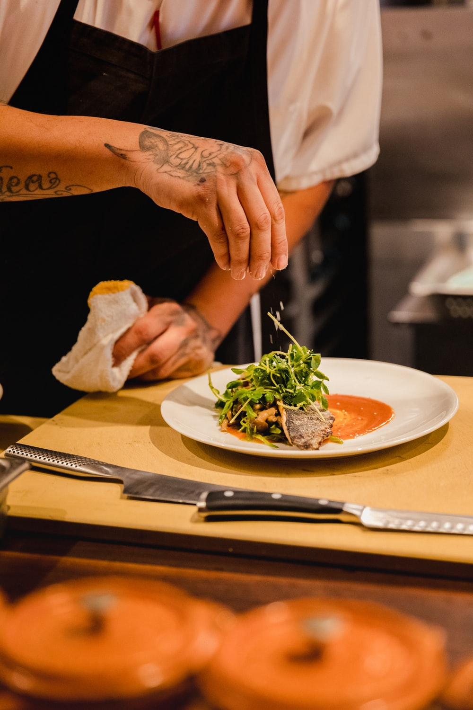
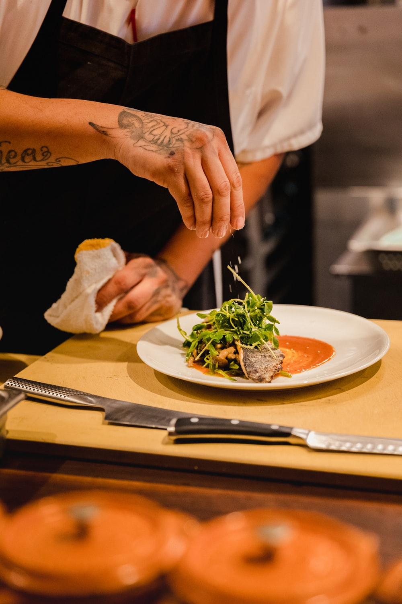
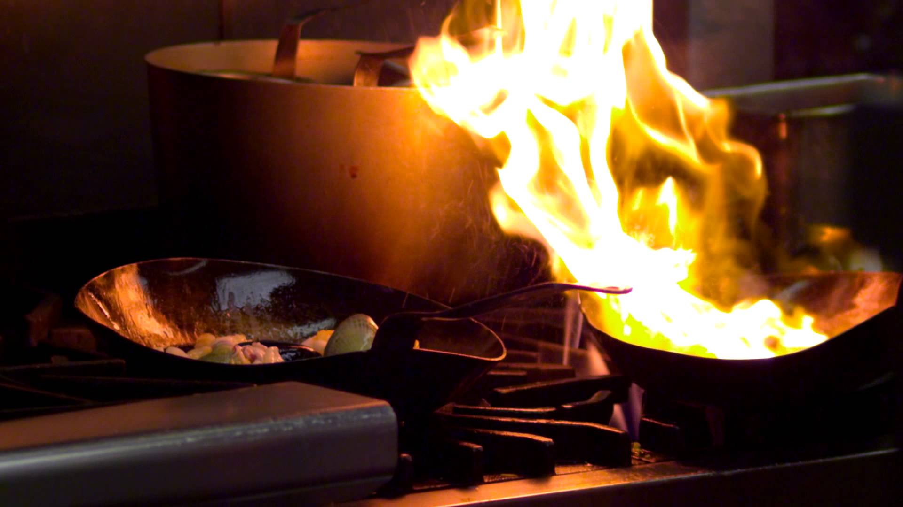
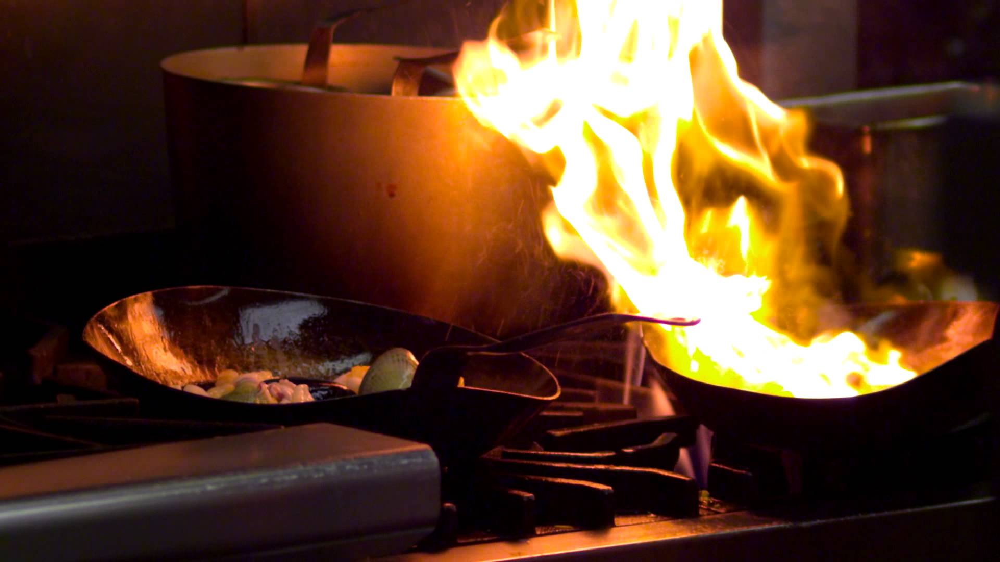
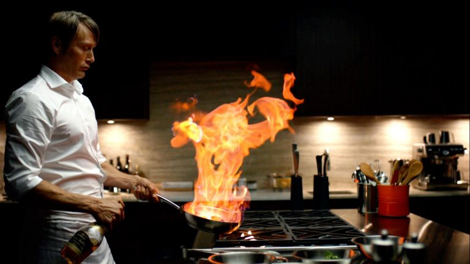
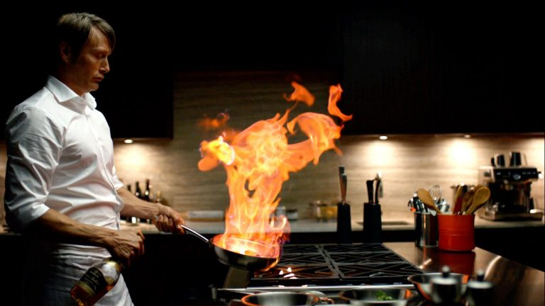
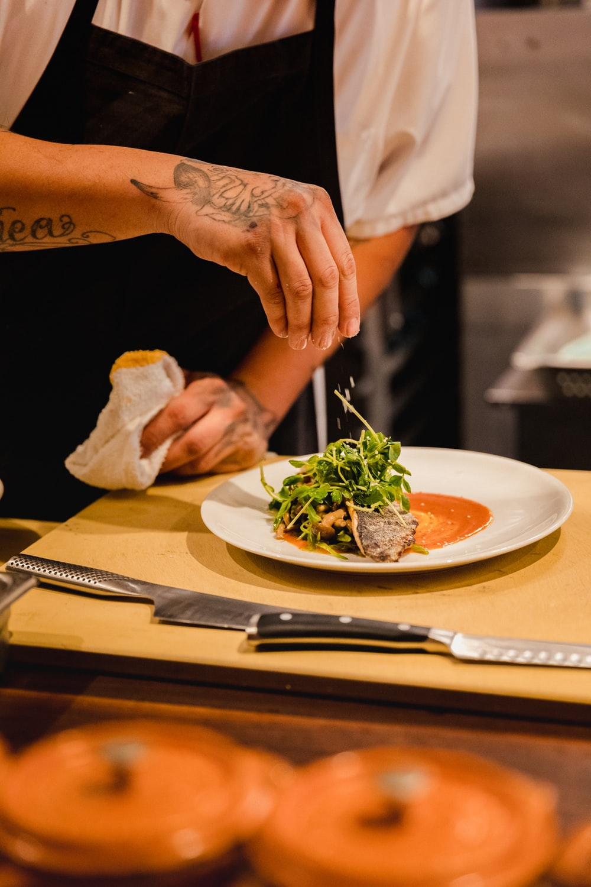
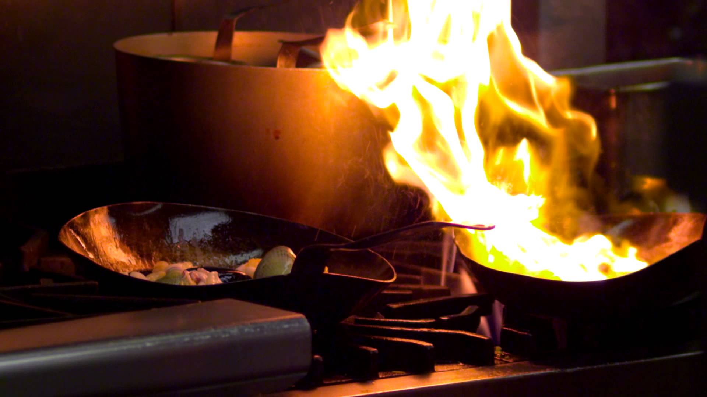
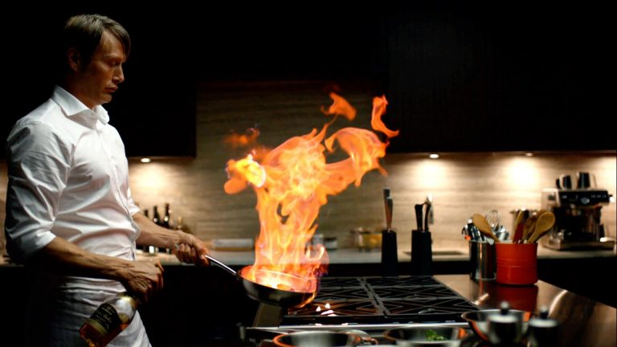

 

 

Cooking or cookery is the art, technology, science and craft of preparing food for consumption. Cooking techniques and ingredients vary widely across the world, from grilling food over an open fire to using electric stoves, to baking in various types of ovens, reflecting unique environmental, economic, and cultural traditions and trends. Types of cooking also depend on the skill levels and training of cooks. Cooking is done both by people in their own dwellings and by professional cooks and chefs in restaurants and other food establishments. Cooking can also occur through chemical reactions without the presence of heat, such as in ceviche, a traditional South American dish where fish is cooked with the acids in lemon or lime juice. Preparing food with heat or fire is an activity unique to humans. It may have started around 2 million years ago, though archaeological evidence for it reaches no more than 1 million years ago.
.Stir-frying .Searing .Braising .Stewing .Steaming .Bakingv .Roasting .Sautéing


